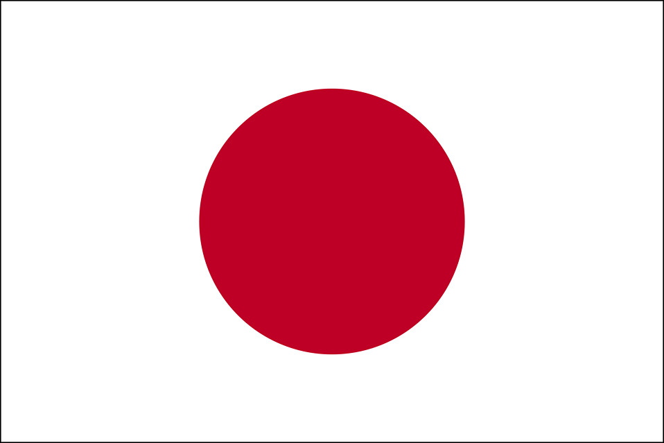
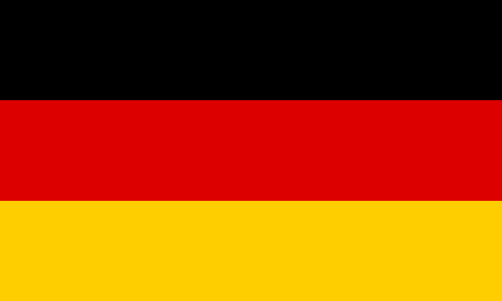

Japan
- Name in native language: Japan
- Full name in English: 日本 ("Nippon" or "Nihon")
- Currency: Japanese Yen (¥)
- 1 USD is 110¥ (The Japanese Yen has no denomination less than 1)
- Date Writting Format: YYYY/MM/DD
I learned of Japan through diving into one of my favorite animated characters as a child, Naruto. The language and culture of Japan was the one I was most facinated by as a preteen. Being an isolated island with no land borders with anyone else, they've developed different ways of approaching almost any concept us in the Western World can fathom. Where we shake hands, they bow. While we see no big deal if a train or bus was late, their transit systems are known to distribute notes to all passengers if they ever go late by more than 5 minutes. This cultural experience is one large reason I feel I'd fit well in Japan if I were to move there. Another influence from Japan is their healthcare quality, and cost to users thereof. I simply wouldn't need the worry I have in the USA, although that's a case with every other country on the list. The education system in Japan offers more oppurtunities than simply one-size-fits-all high school. There's multiple types of high schools anyone could attend. University tuition however, is still somewhat high for standards set by the following countries, but still good compared to the USA.
Spain

- Name in native language(s):
- Reino de España (Spanish)
- Regne d'Espanya (Catalan)
- Espainiako Erresuma (Basque)
- Reino de España (Galician)
- Reiaume d'Espanha (Occitan)
- Full name in English: Kingdom of Spain
- Currency: Euro (€)
- 1 USD is 0.88€
- Date Writting Format: DD/MM//YYYY
My interest in Spain came from their national language being my second language. Spain is thus the only mainland European country I could visit at the time of writting this, and understand what everyone's saying. This, I see as the largest advantage I have of moving here. I'm familiar with many aspects of Spanish culture, again thanks to high school courses. I find the lack of a language barrier a factor that could make a move to Spain rather easy, since language for me can give rise to an identity with a nation. The Spanish government functions much like that of the United Kingdom, it's officially a Kingdom, but a democracy by all measurements possible. The King of Spain is more a cultural figure and/or celebrity than a legitimate government official.
South Korea

- Name in native language: 대한민국 (Dae-Han-Min-Guk)
- Full name in English: Republic of Korea
- Currency: Korean Won(₩)
- 1 USD is 1,130₩ (The Korean Won has no denomination less than 10)
- Date Writting Format: YYYY/MM/DD
In 10th grade I met an exchange student from South Korea, and was curious as to what his homeland was like. As I looked deeper into Korea, it seems a great candidate for permanent life. The healthcare costs and quality are great, as is the educational system, despite it's highly controlled structure. Much like the US, Korea's education system primarily consists of elementary school, middle school, then high school, with very few exceptions. Only recently has the Korean government announced plans to promote vocational schools. One shocking part of their system is their national college entrance exam. Much like the ACT or SAT in the US, it's a test given in high school that universities and colleges look at to evaluate potential students. The difference is that no other college exam exists other than this national college exam, given and administered by the Korean government. All air travel to Korea is banned on the testing day, in order to make sure no distractions can hinder the students' most important day of high school.
France

- Name in native language: République française
- Full name in English: Republic of France
- Currency: Euro (€)
- 1 USD is 0.88€
- Date Writting Format: DD/MM/YYYY & YYYY/MM/DD
My interest in France started from learning just how French the St. Louis area really is. The name of my hometown of Florissant is French for "Flourishing". Anyone from St. Louis recognizes the Fleur-de-lis, a symbol of France that integrated into several parts of our community. The flags of St. Louis and Florisant contain this sybol of our French origin, as does the BSA that I was involved in for 8 years. France seems the easiest cultural transition, as my current residence fostered a love for France strong enough that I feel I have a sort of French identity. Speaking of culture, the younger demographic of France, those of my age, have views in their majoriy that are not too common among the same age group in the United States. As in, more French young adults are indifferent about religion, while religious views among American young adults are by a majority to some sect of Christianity. French young adults are more so than Americans, supportive of family functions where both parents work and take care of children & the home. Meanwhile in America, a more gender-specific family structure is more prevalent than I would like. These disagreements would be far less likely to occur for me in France than in the States, which for me steers my eyes more to France than standing by.
Norway

- Name in native language(s):
- Kongeriket Norge (Norwegian Bokmål)
- Kongeriket Noreg (Norwegian Nynorsk)
- Norgga gonagasriika (Northern Sámi)
- Nøørjen gånkarijhke (Southern Sámi)
- Vuona gånågisrijkka (Lule Sámi)
- Full name in English: Kingdom of Norway
- Currency: Norwegian Krone (kr)
- 1 USD is 8 kr (The Norwegian Krone has no denomination less than 1)
- Date Writting Format: DD.MM.YYYY
I know Norway for their high rankings in overall citizen happiness. An interesting factor to this is their election system, which would take hours for me to understnad fully, and more for me to explain to anyone else. There are some similarities between Norwegian and German federal elections, as they both modify the Sainte-Laguë Method to give parlimentary seats to candidates. This unique voting system is proven to be loved by Norwegians and others worldwide, as there are pressures in the UK, USA, and Canada to institute their own modifications of the Sainte-Laguë method to break the 2-party systems in the countries mentioned. The multi-party system of government makes me much more confident that I'll find a party that closest mirrors my political stances. As far as culture, Norway has similar, if not more appeal than that of France, as the trends mentioned there are more pronounced between the USA and Norway than with the USA and France. A larger bonus to me, is that university is free in Norway to all people who attend, not just Norwegian citizens. The living costs are higher however, but this at least means moving to Norway means I only have to worry about affording rent, phone service, internet, etc. and not pay any notice to tuition for university.
Germany
- Name in native language: Bundesrepublik Deutschland
- Full name in English: Federal Republic of Germany
- Currency: Euro (€)
- 1 USD is 0.88€
- Date Writting Format: DD/MM/YYYY & YYYY/MM/DD
Similar to Norway, foreigners like myself can go to university for a quite low tuition, and living costs! The Federal Govenrment has published a maximum tuition rate of around 500€ per semester. Moving to Germany would be another place where money is not an issue, thus I could focus on practicing the German language, culture, traditions, and otherwise integrate into German society. As far as Government, Germany is famous for their election system, which is simpler than that of Norway, yet still a minor challenge to understand. What separated Germany from Norway in these similarities, is that Germany is much more populated, and spread among their land. Rather than having one city with a large portion of their entire population, Germany has moderately large places spread the entire country. There are 79 cities in Germany above 100,000 people, giving room for plenty of options for cities to live in.